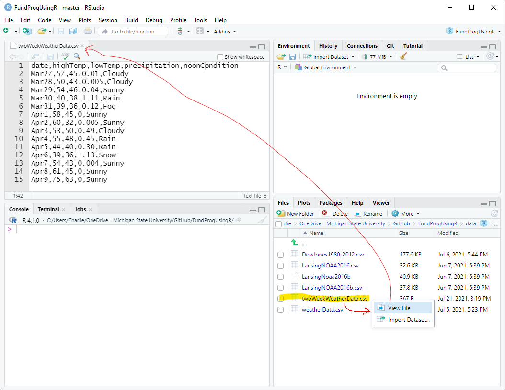
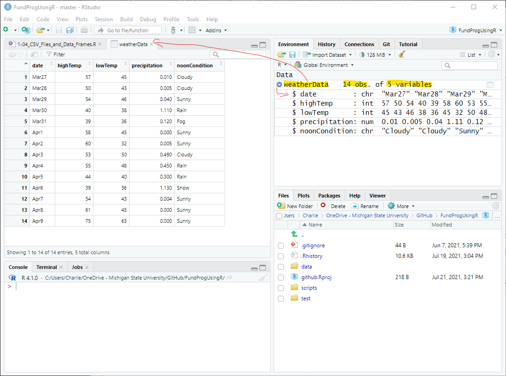
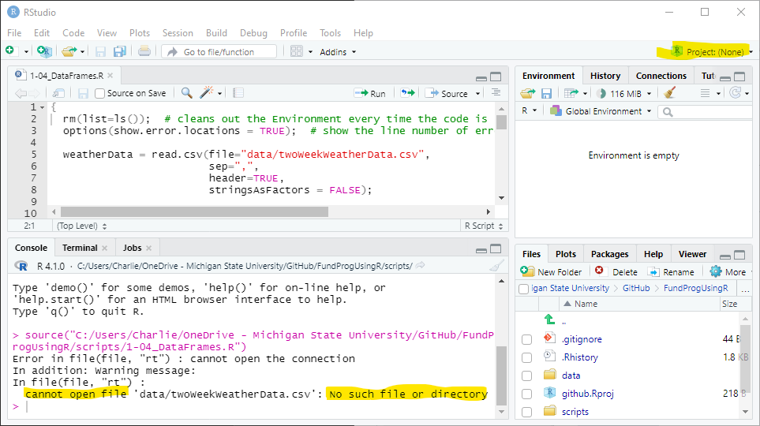
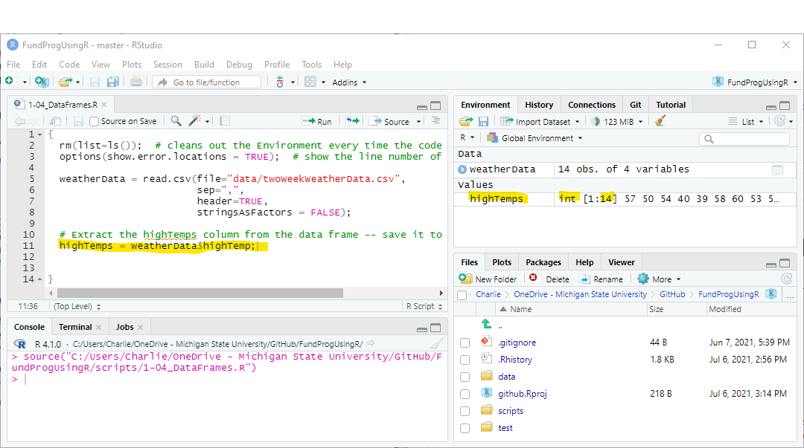
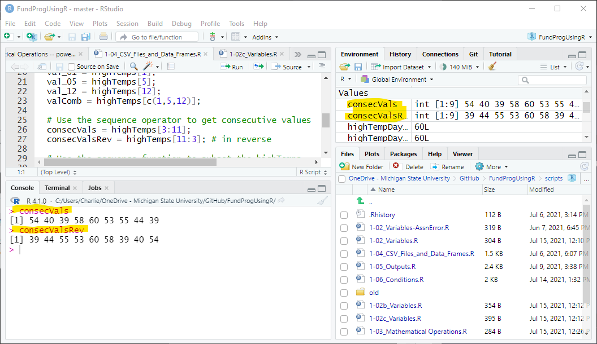
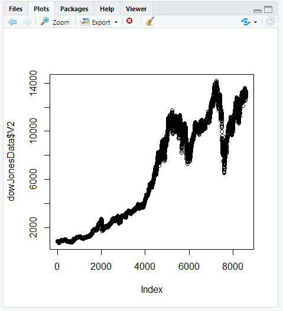
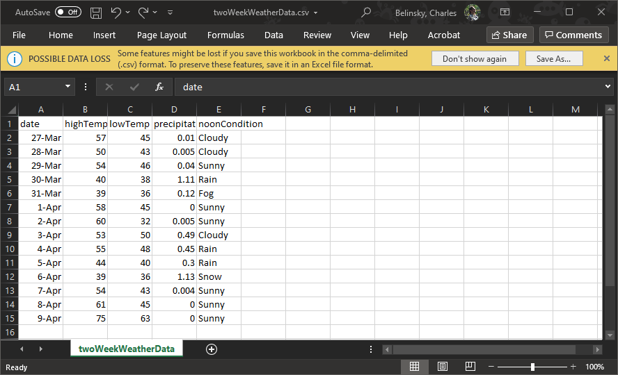

Mathematical Operations
Functions Introduction
If you have any questions about the material in this lesson or your Class Project feel free to email them to the instructor here.
From this point on, most lessons will have scripts and/or data file to download. The downloads will in this section:
The script for this lesson is here
The data used in this lesson, twoWeekWeatherData.csv
In the last two lessons, everything we did was contained to one script file -- no outside file was needed. The scripts in those lessons were standalone scripts and could be executed inside or outside your RStudio Project with the same results.
Standalone scripts are rare and are generally only created for testing purposes.
The script for this lesson will not execute correctly if it is treated as a standalone script (i.e., it is executed outside of the RStudio Project). This is because the file looks for a data file and it needs to know where to look for it.
Many people still treat all R scripts as standalone scripts (i.e., they do not use RStudio Project). This causes all sorts of problems when script file look for other files. The way to get around this is to set the Working Directories using setwd(). This is a mess because Working Directories change when file are moved between computers or even within a computer. Scripts that set working directories are much harder to share and maintain. This author strongly suggests that you use RStudio Projects and avoid the working directory mess.
Vector variables, or vector for short, are variables that hold multiple related values. For instance if we have temperature values for 5 days, we could create 5 variables and assign each one a temperature value:
tempHigh1 = 65;
tempHigh2 = 57;
tempHigh3 = 61;
tempHigh4 = 64;
tempHigh5 = 59;
And, in the last lesson's application, we averaged the 5 values like this:
tempAvg = (tempHigh1 + tempHigh2 + tempHigh3 +
tempHigh4 + tempHigh5) / 5;
But, in programming we want to group related values together. So, instead of creating 5 different variables, we create one vector that has 5 values:
tempHigh = c(65, 57, 61, 64, 59);
One of the main reasons to create a vector is that the values in the vector are all associated and we can perform mathematical operations on the whole vector. For instance, we might have temperatures in Fahrenheit and want to convert all the temperature to Celsius:
tempHighCel = (5/9) * (tempHigh - 32)
Or, we can use one of R's many, many statistical functions, mean(), on the vector:
tempMean = mean(tempHigh);
We can see in the Environment that tempHighCel has 5 converted temperatures and that tempMean is the same as tempAvg above:
tempAvg: 61.2
tempHigh: num [1:5] 65 57 61 64 59
tempHighCel: num [1:5] 18.3 139 16.1 17.5 15
tempMean: 61.2
Extension: statistical functions and vectors
Putting values into vectors also allows us to associated values between vectors. If we have a vector of high temperature values, then we could also have a vector of low temperature values.
tempLow = c(45, 40, 55, 37, 42);
We can directly subtract tempLow values from tempHigh to get the difference in temperature for all values:
tempDiff = tempHigh - tempLow;
We can index individual values. You could think of the vector as 5 days. And if you want, you can find the change in temperature for any day using the index 1 through 5:
tempDiff_3 = tempHigh[3] - tempLow[3];
tempDiff_5 = tempHigh[5] - tempLow[5];
The Environment shows:
tempHigh: num [1:5] 65 57 61 64 59
tempLow: num [1:5] 45 40 55 37 42
tempDiff: num [1:5] 20 17 6 27 17
tempDiff_3: 6
tempDiff_5: 17
Data frames are essentially made up of vectors that all have the same length. The vectors are the columns in the data frame and the number of values in the vector is determined by the number of rows in the data frame. In Fig.## there is a weather data frame (that we will use in later lessons) and each column has a measured daily weather value (e.g., minTemp, maxTemp). The row gives all the measured weather values for a specific day (e.g., row 1 is Jan 1, row 2 is Jan 2).
A data frame viewed in RStudio with 23 variables (i.e., the 23 columns, which are vector variables)
In the first couple of lessons we were using data from inside the script but most of the data you will use will come from outside the script -- often from a data frame. The data frames themselves often come from a CSV file. CSV stands for Comma Separated Values, meaning that the values in the file are separated by commas.
Note: CSV is really just a text file that can be read in any text editor and CSV file do not have to use commas as separators.
Let's look at a small data set we downloaded in section ## called twoWeekWeatherData.csv, which contains two weeks of weather data from Lansing, Michigan.
CSV files are often opened by default in Excel and this can problematic:
Trap: Opening CSV files in Excel
CSV files are just text files and CSV files can be opened in any text editor (e.g., notepad, notepad++, textEdit).
RStudio is a text editor so we can open twoWeekWeatherData.csv in RStudio by either:

The twoWeekWeatherData.csv file opened in RStudio
The CSV file has 15 lines (rows). The first row contains the 5 column headers and the other 14 rows contain the 5 values for each date -- all separated by a comma.
We can see that the CSV file has a header row and each row has five values representing: date, highTemp, lowTemp, precipitation, noonCondition.
To use the data in a script we need to read the data into a script file -- and for that we will use the read.csv() function.
{
rm(list=ls()); # cleans out the Environment every time the code is executed
options(show.error.locations = TRUE); # show the line number of errors in Console
weatherData = read.csv(file="data/twoWeekWeatherData.csv", # path to file
sep=",", # values are separated by commas
header=TRUE, # there is a header row
stringsAsFactors = FALSE); # for people using R 3.X
}
read.csv() reads in the data from the CSV file -- and saves the data to a variable called weatherData.
weatherData is a data frame variable and it appears in the Environment tab under Data as 14 obs. of 5 variables. (i.e., 14 rows and 5 columns), which matches what we saw in the CSV file (Fig.##).

Viewing the data frame in the File Viewer
In the Environment, when you click on the arrow next to the left of weatherData you see some information about the columns in the data frame. The first piece of information is the name of the column (i.e., the header -- date, highTemp, etc.). The second is the type of value the column contains.
In weatherData there are three types of values:
Note: the date column has date values but it is not formatted properly so R does not recognize it as a Date -- something we will cover later.
read.csv() is a function that tells R to open a file and treat it like a CSV file. A function is a set of code separate from your main script that performs a common task (e.g., plotting values, finding a standard deviation, reading in a file).
There is a lot going on in our first line of code and that is because there are a lot of options, called arguments, when opening up a CSV file! We will talk a little bit about these arguments here and save the rest of the discussion for the next lesson.
Inside the function read.csv(), I included four arguments (file, sep, header, and stringsAsFactors). Arguments are like the knobs and dials for a function. The function reads in a CSV file and the arguments tweak how the file is read.
file = "data/twoWeekWeatherData.csv" means that the script opens the file called twoWeekWeatherData.csv located in the data folder of your RStudio Project
This only works if you are in the RStudio Project because the RStudio Project sets the Working Directory to your Project Folder.
If you execute the script file outside your RStudio Project, you will get cannot open file error because the script does not know where to start looking for the CSV file.

You get a cannot open file error if you try to execute the script outside of your RStudio Project
sep = "," means that the values in the file are separated by commas. This is not always true -- even for CSV files.
The most common alternate separator values are spaces ( sep = " " ) and dots ( sep = "." )
header = TRUE means the first row contains header information. In this case the header information is the column names (date, highTemp, lowTemp, and precipitation)
header=FALSE would mean that the first row contains data (i.e., there are no column names). If you set header=FALSE in this example then R will think that the column names are the first data point. So, you will have 15 values in each vector and the first value will not make sense.
stringAsFactors = FALSE: the main reason to include this is because of a change between R versions 3 and 4. This line ensures that the code will run the same in both versions. In the next lesson we will talk about the difference between strings and factors and the changes that R made between versions 3 and 4.
We now have a data frame with weather information stored in a variable called weatherData. But, we usually do not want to deal with the whole data frame at once. So, our next trick will be to extract parts of the data from the data frame. We might want to work with one column in the data frame (e.g., highTemp or precipitation). We can see all the columns in the data frame by expanding the data frame in the Environment or looking at the headers in the File Viewer (both views are in fig ##).
Columns in a data frame are vectors (i.e., a variable with multiple values) and we can save the columns to a vector. We can access the columns from a data frame using the $ operator.
We start with weatherData and, use the dollar sign operator ( $ ) to access the highTemp column, and save the results to the vector called highTemps:
highTemps = weatherData$highTemp;
In the Environment square brackets ( [ ] ) indicates the variable is a vector. highTemps appears in the Environment as a vector. highTemps has 14 ( [1:14] ) integer (int) values, representing the temperature for each of the 14 days.

The highTemps vector variable in the Environment tab
Perhaps we want just one value -- specifically, we want to know the high temperature on April 2 (the seventh day in weatherData).
There are multiple ways to access that individual value. I will present three, but for the rest of this lesson, we are going to use the first method.
We could subset using the subset operator ( [ ] ) the 7th value from highTemps:
highTempDay7a = highTemps[7];
We could go back to the original data frame (weatherData) and subset the 7th value from the column highTemp:
highTempDay7b = weatherData$highTemp[7];
Or, we can use a row/column (e.g., X/Y) operation on weatherData to get the value:
highTempDay7c = weatherData[7, "highTemp"]; # think of this as [X,Y] notation
The last method is functionally the same as the previous two -- but the X,Y notation has an advantage when dealing with more complex subsetting situations (e.g., subsetting multiple rows and columns), which will be discussed in a future lesson.
I will be referring quite often to the Environment tab. Instead of taking a screenshot of the Environment tab (which is hard to maintain), I will display the variables I am focused on like this:
highTemp7a: 60L
highTemp7b: 60L
highTemp7c: 60L
The Environment tab shows that highTemp137a,b, and c are all equal to 60L
highTemp7a, highTemp7b, and highTemp7c all show that the high temperature on the 7th day is 60.
The L is something you can ignore -- it indicates that the number is an long integer, whichis an integer.
If you want to know more go to Extension: Long and Short Integers.
We have pulled out a column from a data frame and we have pulled out individual values. In this section, we will show different ways to pull out multiple values with:
highTemps is a vector with 14 values and each of these values can be accessed by their numeric placement:
val_01 = highTemps[1];
val_05 = highTemps[5];
val_12 = highTemps[12];
Or, we might want to combine the temperatures from these three days into one variable. c() creates a vector of the three values (1, 5, and 12) and that vector is used to subset highTemps:
valComb = highTemps[c(1,5,12)]; # a vector with 3 values
valComb is a vector with 3 values, the high temperature for days 1, 5, and 12:
val_01: 57L
val_05: 39L
val_12: 54L
valComb: int [1:3] 57 39 54
The three values we pulled from highTemps individually saved and combined (valComb)
If we want to get the high temperature for consecutive days, we can use the simple sequencing ( : ) operator -- simple refers to the fact that we are sequencing by 1:
consecVals = highTemps[3:11]; # same as highTemps[c(3,4,5,6,7,8,9,10,11)]
consecVals is a vector with 9 values -- the high temperatures from days 3 through 11. Note: 9 values, not (11-3=) 8 -- we include both the 3 and the 11.
The ( : ) operator also works in reverse
consecValsRev = highTemps[11:3];
consecValsRev is a vector with 9 values -- the high temperatures from days 11 down to 3.
consecVals: int [1:9] 54 40 39 ...
consecValsRev: int [1:9] 39 44 55 ...
int [1:9] means 9 values are in each vector -- the first few values are shown
The Environment tab is good for quickly looking at values, but it only shows a few values from each vector. If you want to see all the values then you can use the Console tab (bottom-left corner). In the Console tab, type in the variable you want to see and press Enter:

Using the Console tab to view variables
These two values, consecVals and consecValRev, are shown in the Console window in the figure ## image.
We can use the seq() to create a more complex sequence to subset a vector.
This is a two step process:
seq() is a function with three arguments:
We can create a sequence that lists every other number from 1-14
seq1 = seq(from=1, to=14, by=2);
We can reverse the sequence by switching the to and from and inverting the by
seq2 = seq(from=14, to=1, by=-2);
We can get every 3rd number for the first 10 numbers:
seq3 = seq(from=1, to=10, by=3);
The 3 sequences we created are just vectors of numbers:
seq1: 1 3 5 7 9 11 13
seq2: 14 12 10 8 6 4 2
seq3: 1 4 7 10
We can use the 3 sequences above as index vectors to index the highTemps vector:
Get every other high temperature:
highTempSeq1 = highTemps[seq1];
Get every other high temperature in reverse:
highTempSeq2 = highTemps[seq2];
Get every 3rd high temperature value in the first 10 values:
highTempSeq3 = highTemps[seq3];
highTempSeq1: int [1:7] 57 54 39 60 ...
highTempSeq2: int [1:7] 75 54 44 53 ...
highTempSeq3: int [1:4] 57 40 60 44
There are 7 values in the first two sequences and 4 in the third
You can combine the above two steps in 1 command.
The following command will give you the same high temperature values:
highTempSeq1b = highTemps[seq(from=1, to=14, by=2)];
highTempSeq2b = highTemps[seq(from=14, to=1, by=-2)];
highTempSeq3b = highTemps[seq(from=1, to=10, by=3)];
highTempSeq1b: int [1:7] 57 54 39 60 ...
highTempSeq2b: int [1:7] 75 54 44 53 ...
highTempSeq3b: int [1:4] 57 40 60 44
While it might seem like combining steps is a good idea because it reduces the amount of code, this needs to be balanced with the fact that combining code makes it harder to read. One of the big problems I see when looking at people's code is that they cram too much code into one command and it becomes really difficult to debug if anything goes wrong. If you are going to err on one side then this author recommends you err on the side of breaking up code rather than combining it.
Extension: square brackets vs. round brackets
A) Create a file named app1-04.r in your scripts folder inside your RStudio Project and save the information from twoWeekWeatherData.csv to a variable named weatherData (just like in this lesson).
B) Sequencing
Use the seq() function to create this sequence: (13, 9, 5, 1, -3, -7).
Note: this sequence could not be used to index a vector because it mixes positive and negative numbers.
C) Subsetting:
D) Negative subsetting:
Subset precipitation using the sequence c(-1,-3,-5). Explain in comments what happened.
E) Vector Math:
Convert the precipitation column from inches to centimeters (2.54cm = 1in).
F) Opening Data Frames:

Plot of the Dow Jones data
Save the script as app1-04.r in your scripts folder and email your Project Folder to the instructor.
Instructions for zipping the Project Folder are here.
If you have any questions regarding this application, feel free to email them to the instructor here.
Answer the following in comments inside your application script:
If you have Excel on your computer, then it is probable that Excel is the default program for opening CSV files. So, double-clicking on a CSV file will probably open it in Excel. The danger with opening CSV files in Excel is that Excel will sometimes reformat the data (especially date and money columns) and then give a message saying how the data needs to be saved to be preserved. Do not save the file -- it will change the format of your data. If you are editing a CSV file in Excel then I would save the results to a test file first to make sure Excel did not do anything untoward.

Opening a CSV file in Excel -- the possible data loss warning is not something you want to heed
L stands for Long integer -- long meaning that this variable can hold a number larger than 256. In the old days, when space on computers was VERY expensive, programmers would save space by having a short integer and long integer designation. So, if a programmer knew a number was small, they would assign it to a short integer to take up less space on the computer. Since temperatures in Lansing are generally going to be less than 256 (unless you are using the Kelvin system), it is safe to assign temperatures to short integers.
Nowadays, space is so cheap that we rarely care that we are using a tiny bit more memory than we need -- so L has become mostly a relic of the past.
One huge advantage to using vectors is that most statistical function take vectors. So, you can easily perform statistical functions on a vector:
tempHigh = c(65, 57, 61, 64, 59);
tempMean = mean(tempHigh);
tempSD = sd(tempHigh);
tempVar = var(tempHigh);
tempMean: 61.2
tempSD: 3.346...
tempVar: 11.2
We will be doing more with this in later lessons...
Square brackets are used when you are subsetting or indexing a variable.
Round brackets are used when you are calling a function.
… and the two types of brackets are often used in the same command
lowTemps [seq(from=12, to=2, by=-2)]
says you are going to subset lowTemps using the function seq().
> lowTemps [seq(from=12, to=2, by=-2)]
[1] 43 40 50 45 38 43
seq() is a function and produces a vector of numbers:
> seq(from=12, to=2, by=-2)
[1] 12 10 8 6 4 2
c() is also a function – c stands, unintuitively, for concatenate and will also produce a vector of numbers:
> c(12,10,8,6,4,2)
[1] 12 10 8 6 4 2
lowTemps [c(12,11,10,9,8,7,6)] and lowTemps [seq(from=12, to=2, by=-2)] produce the same results.
You can also subset lowTemps without a function:
> lowTemps[5]
[1] 36
> lowTemps[4:8]
[1] 38 36 45 32 50
Technically, 4:8 still calls a sequence function in the background – but that is really getting into the weeds!
read.csv(), ggplot(), plot(), rm(), options() are all functions (the latter 2 are from lines 2 and 3 in all lesson scripts). There will be a lot more about functions in this class starting with next lesson.